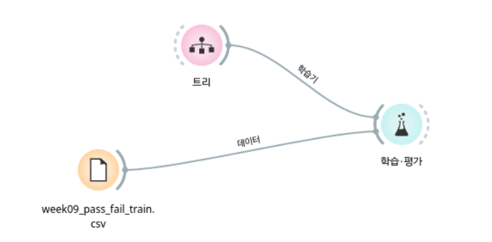
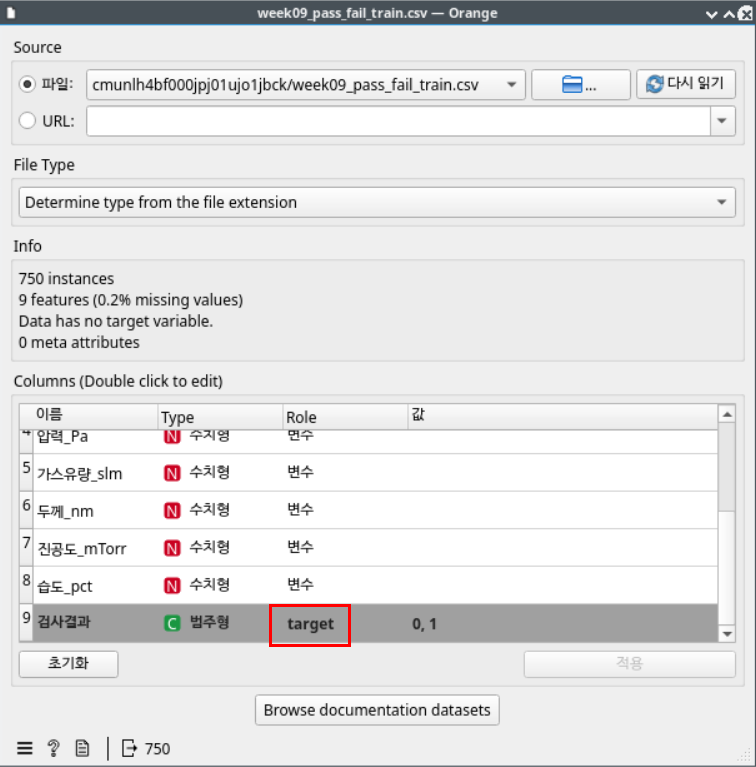
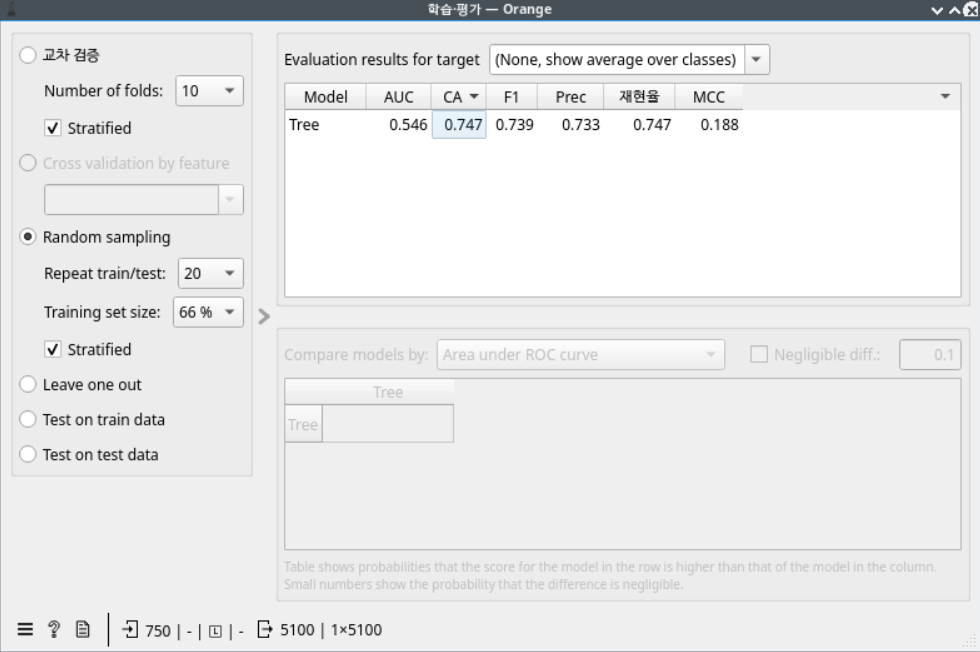

머신러닝 예측 모델 만들기
오늘의 질문: "지난 기록만 보고, 아직 검사하지 않은 로트의 합격/불합격을 미리 맞힐 수 있을까?"
- 지난 기록(빈칸 정리 후)
- 735건
- 합격 / 불합격
- 582 / 153
- 모델 정확도(모의고사)
- 80.3%
- 놓친 불합격
- 31건 중 22건
오늘의 학습 목표
규칙을 스스로 찾는 머신러닝
연습문제로 배우고 모의고사로 채점
정확도와 혼동행렬 읽기
- 머신러닝이 "지난 기록(문제+정답)을 보고 규칙을 스스로 찾는 것"임을 3차시의
if판정과 비교해 말할 수 있다. - Feature(문제)와 Label(정답)을 나누고, 연습문제(train)와 모의고사(test)로 나눠 결정트리 모델을 학습시킬 수 있다.
- 정확도와 혼동행렬의 네 칸을 공장 말로 읽고, "불량을 합격으로 놓친 칸"이 왜 가장 위험한지 설명할 수 있다.
- 예측이 잘 맞아도 원인을 안다는 뜻은 아니라는 점을 "원인 후보"라는 말로 설명할 수 있다.
왜 이걸 배워야 할까?
- 지금까지는 이미 끝난 기록을 보고 "어디서 불합격이 많았나"를 설명했다.
- 공장에서는 한 걸음 더 나아가고 싶다. 검사 결과가 나오기 전에 "이 로트는 불합격일 것 같다"를 미리 알면, 다시 점검하거나 다음 공정으로 보내기 전에 막을 수 있다.
- 오늘은 지난 기록 735건으로 "공정 조건을 보면 합격/불합격을 맞힐 수 있는가"를 직접 실험한다. 그리고 그 결과를 얼마나 믿어도 되는지 숫자로 따져 본다.
지난 시간 복습
- 3차시: 사람이 직접 판정 규칙을 썼다.
if 295 <= temp <= 305:이면 합격, 아니면 불합격. 규칙은 사람이 정했고, 컴퓨터는 그 규칙을 따라 했을 뿐이다. - 8차시: 진공도가 정상 범위(4.5~5.5 mTorr)를 벗어난 기록에서 불합격 비율이 크게 높았다. 그래도 "원인"이 아니라 "원인 후보"라고 불렀다. 함께 움직인다고 원인이라고 단정할 수는 없기 때문이다.
- 오늘: 규칙을 사람이 쓰지 않는다. 지난 기록을 컴퓨터에게 주고 규칙을 스스로 찾게 한다. 그리고 그 규칙도 "원인"이 아니라 "원인 후보를 좁히는 단서"로 읽는다.
머신러닝 개념 이해하기
규칙을 사람이 쓰느냐, 컴퓨터가 찾느냐
- 3차시 방식: 사람이 규칙을 쓰고 → 컴퓨터가 그 규칙으로 판정한다.
- 머신러닝 방식: 사람은 지난 기록(문제와 정답)을 준다 → 컴퓨터가 기록을 보고 규칙을 찾는다 → 찾은 규칙으로 새 문제의 답을 예측한다.
- "머신(기계)이 러닝(배운다)"이라는 이름 그대로, 기록에서 배우는 것이다.
머신러닝의 큰 흐름. 오늘은 앞의 두 칸(기록 → 규칙 찾기)과 "규칙이 얼마나 잘 맞나 채점하기"를 한다. 처음 보는 새 로트 9건을 실제로 예측하는 것은 10차시에 한다.
Feature(문제)와 Label(정답)
- Feature(피처, 특징) = 문제. 예측할 때 보고 판단하는 단서다. 오늘은 공정 조건 6개 열이다.
- Label(레이블, 정답) = 정답. 맞히고 싶은 값이다. 오늘은
합격여부열이다. - 시험공부에 빗대면, Feature는 문제지, Label은 답안지다. 지난 기록에는 둘 다 있고, 새 로트에는 문제지만 있다.
오늘 데이터의 열이 공장에서 뜻하는 것
한 행 = 로트 1건의 공정 조건과 최종 검사 결과다. 열마다 공장에서 무엇을 뜻하는지 한 줄씩 다시 짚고 가자.
| 열 이름 | 공장에서 뜻하는 것 | 오늘 역할 |
|---|---|---|
공정명, 설비번호 | 어떤 작업(식각·포토 등)을 어느 기계에서 했는지 | 오늘은 쓰지 않음(글자 열) |
온도_섭씨 | 작업할 때 설비 안의 온도 | Feature(문제) |
압력_Pa | 설비 안의 압력(Pa는 압력 단위 "파스칼") | Feature(문제) |
가스유량_slm | 설비에 흘려 넣은 가스의 양(slm은 1분에 흐른 양의 단위) | Feature(문제) |
두께_nm | 작업 뒤 웨이퍼 위에 남은 막의 두께(nm는 10억분의 1미터) | Feature(문제) |
진공도_mTorr | 설비 안의 공기를 얼마나 빼냈는지(mTorr는 아주 낮은 압력의 단위, 8차시에 다룸) | Feature(문제) |
습도_pct | 공장(클린룸) 공기의 습도(%) | Feature(문제) |
합격여부 | 최종 검사 결과(1 = 합격, -1 = 불합격) | Label(정답) |
합격여부열: 1 = 합격, -1 = 불합격. 1차시부터 써 온 표기 그대로다.- 0은 쓰지 않는다. 오늘 코드에서 합격을 셀 때는
== 1, 불합격을 셀 때는== -1을 쓴다.
왜 여러 Feature를 함께 넣을까
1차시부터 "열 하나만 보면 놓치는 것이 있다"고 했다. 오늘 데이터로 다시 확인해 보자. 아래는 강사가 빈칸을 정리한 735건을 미리 세어 둔 결과다. 정상 범위는 3차시(온도 295~305℃)와 8차시(진공도 4.5~5.5 mTorr)에서 쓴 학습용 기준이다.
| 온도(295~305℃) | 진공도(4.5~5.5 mTorr) | 기록 | 불합격 | 불합격 비율 |
|---|---|---|---|---|
| 범위 안 | 범위 안 | 401건 | 32건 | 8.0% |
| 범위 밖 | 범위 안 | 193건 | 64건 | 33.2% |
| 범위 안 | 범위 밖 | 95건 | 31건 | 32.6% |
| 범위 밖 | 범위 밖 | 46건 | 26건 | 56.5% |
| 합계 | 735건 | 153건 | 20.8% | |
- 온도만 보면: 온도가 범위 안인 기록 496건(401+95)에도 불합격이 63건(32+31) 있다. 온도 하나로는 이 63건을 설명하지 못한다.
- 진공도를 함께 보면: 그 63건 중 31건이 진공도가 범위를 벗어난 95건 쪽에 몰려 있다(32.6%).
- 둘 다 벗어나면: 불합격 비율이 56.5%로, 둘 다 범위 안(8.0%)의 7배가 넘는다.
결정트리 — 스무고개로 규칙 찾기
- 오늘 쓰는 모델은 결정트리(Decision Tree)다. 스무고개처럼 질문을 하나씩 던져 기록을 갈래로 나눈다.
- "온도가 ○○도 이하인가?" → 예/아니오로 나누고, 나뉜 쪽에서 또 질문한다. 마지막 갈래에 합격이 많으면 "합격", 불합격이 많으면 "불합격"이라고 답한다.
- 어떤 열로, 몇 도를 기준으로 질문할지는 모델이 지난 기록을 보고 스스로 고른다. 이 고르는 과정이 "학습"이다.
- 나뭇가지처럼 갈라지는 모양이라 "트리(나무)"라고 부른다. 그림으로 그리면 나무를 거꾸로 세운 모양이다.
아래는 오늘 실습에서 학습시킨 모델 안을 강사가 열어 본 결과다(학습용 588건 기준, 위쪽 질문 3개만 그렸다).
오늘 모델이 실제로 찾은 위쪽 질문 3개. 초록 칸은 불합격이 적은 갈래, 빨간 칸은 불합격이 많은 갈래다. 각 갈래 아래로도 질문이 더 이어지며, 한 기록에 던지는 질문은 최대 4번이다.
- 3차시에 사람이 쓴 규칙: "온도가 295~305℃ 사이면 합격"
- 오늘 모델이 기록만 보고 찾은 질문: "온도가 293.95℃보다 높고 306.05℃ 이하인가?" + "진공도가 5.49 mTorr 이하인가?"
- 아무도 알려주지 않았는데 사람이 정한 범위와 비슷한 온도 경계를 찾았고, 8차시의 진공도 기준(5.5)과 거의 같은 질문(5.49)까지 더했다. 293.95처럼 끝자리가 애매한 것은, 모델이 기록과 기록 사이의 가운데 값을 경계로 고르기 때문이다.
max_depth=4는 "한 기록에 질문을 최대 4번까지만 하라"는 뜻이다. 질문을 너무 많이 허락하면
지난 기록을 통째로 외워 버릴 수 있다(아래 "도전 실습"에서 확인). 오늘은 4로 고정한다.
연습문제와 모의고사 — train/test 나누기
- 모델이 맞히는 실력을 확인하려면 채점이 필요하다. 그런데 공부한 문제로 채점하면 안 된다. 답을 외워서 맞힐 수 있기 때문이다.
- 그래서 지난 기록을 둘로 나눈다.
- train(학습용) = 연습문제: 모델이 보고 규칙을 찾는 기록. 전체의 80%(588건)
- test(평가용) = 모의고사: 모델이 한 번도 보지 않은 기록. 전체의 20%(147건). 여기서 채점한다.
- 모의고사 점수가 "처음 보는 새 로트에서도 이 정도는 맞히겠다"는 기대치가 된다.
나눌 때 쓰는 함수 train_test_split에는 옵션이 세 개 들어간다. 각각 한 줄씩만 알면 된다.
| 옵션 | 뜻 |
|---|---|
test_size=0.2 | 전체의 20%를 모의고사로 떼어 둔다 |
random_state=42 | 섞는 방식을 고정한다. 누가 언제 실행해도 같은 기록이 같은 쪽으로 나뉘어, 강의와 같은 숫자가 나온다 |
stratify=y | 연습문제와 모의고사 양쪽에 합격:불합격 비율을 거의 같게 맞춘다. 불합격이 한쪽에 몰리는 것을 막는다 |
정확도와 혼동행렬 — 채점표 천천히 읽기
정확도 — 몇 개나 맞혔나
- 정확도 = 맞힌 개수 ÷ 전체 개수. 시험 점수와 같다.
- 오늘 모의고사 147건 중 모델이 맞힌 것은 118건이다. 118 ÷ 147 = 약 80.3%.
"무조건 합격"이라고 찍으면 몇 점일까
- 모의고사 147건 중 실제 합격은 116건, 불합격은 31건이다.
- 아무것도 배우지 않고 147건 모두 "합격"이라고 찍어도 116건은 맞는다. 116 ÷ 147 = 약 78.9%.
- 모델(80.3%)이 찍기(78.9%)보다 높기는 하지만, 맞힌 개수로 보면 118건 대 116건, 딱 2건 차이다.
- 이렇게 한쪽(합격)이 대부분인 데이터에서는 정확도 숫자 하나만으로는 "잘 배운 모델"과 "찍기"를 구분하기 어렵다. 그래서 무엇을 맞히고 무엇을 틀렸는지 나눠 봐야 한다.
혼동행렬 — 채점표를 네 칸으로 나누기
혼동행렬은 "실제 정답"과 "모델의 예측"을 짝지어 네 칸으로 센 표다. 모델이 무엇을 무엇으로 헷갈렸는지(혼동했는지) 보여준다. 오늘 모델의 실제 결과로 한 칸씩 읽어 보자.
| 모델 예측: 합격(1) | 모델 예측: 불합격(-1) | |
|---|---|---|
| 실제: 합격(1) | 109건 — 멀쩡한 로트를 합격으로 맞힘. 문제없이 다음 공정으로 간다. | 7건 — 멀쩡한 로트를 불량으로 의심(헛경보). 다시 검사하느라 시간과 비용이 든다. |
| 실제: 불합격(-1) | 22건 — 불량 로트를 합격으로 놓침. 가장 위험한 칸이다. | 9건 — 불량 로트를 미리 잡아냄. 모델이 해낸 일이다. |
- 헛경보(7건)는 한 번 더 검사하면 "멀쩡하네" 하고 끝난다. 손해는 시간과 비용이다.
- 놓친 불량(22건)은 아무도 의심하지 않은 채 다음 공정으로, 최악에는 고객에게까지 간다. 그 뒤에 발견되면 그사이 쌓인 작업이 모두 헛수고가 되고 신뢰도 잃는다.
- 화재경보기에 빗대면, 헛경보는 귀찮을 뿐이지만 불이 났는데 울리지 않는 경보기는 위험하다.
① Orange3로 먼저 훑어보기
코드를 쓰기 전에, 클릭만으로 같은 실험을 먼저 해 본다. 위에서 배운 개념이 화면의 어디에 있는지 확인하는 것이 목표다.
- 파일(File):
week09_pass_fail_train.csv를 연다. 아래 열 목록에서합격여부의 유형(Type)을 범주형(categorical)으로, 역할(Role)을 목표(target), 곧 정답으로 바꾸고 적용(Apply)을 누른다. 이것이 "Label 정하기"다. (값이 1과 -1인 숫자 열이라, 숫자로 두면 합격/불합격을 고르는 문제가 아니라 숫자를 맞히는 문제로 계산된다.) - 트리(Tree): 결정트리 모델. 연결만 하면 스무고개 규칙을 스스로 찾는다.
- 학습·평가(Test and Score): 파일과 트리를 모두 연결한다. 결과 표의 CA 열이 정확도다.
- 위젯이 처음이라면 → 부록: Orange3 시작하기에서 먼저 확인
실제 Orange3 화면으로 확인하기



- Orange3는
공정명·설비번호까지 문제(Feature)로 쓰고, 빈칸이 있는 행도 지우지 않는다. - 트리(Tree)의 기본 질문 횟수 제한이 우리 코드의
max_depth=4와 다르다. - 학습·평가(Test and Score)는 기록을 여러 번 나눠 채점한 평균을 보여준다. 나누는 방법은 화면 왼쪽에서 고른다 (교차 검증(Cross validation)이나 무작위 반복 나누기(Random sampling). 그림 9-3은 Random sampling 20회, 66% 학습 설정이다). 우리 코드는 한 번만 나눈다.
② 파이썬으로 확인하기 — 데이터 준비와 학습
데이터 읽고 빈칸 정리하기(5차시 복습)
import pandas as pd
df = pd.read_csv("../../data/weekly/week09/week09_pass_fail_train.csv", encoding="utf-8-sig")
print(df.shape)
print(df.isna().sum())(750, 9) 공정명 0 설비번호 0 온도_섭씨 1 압력_Pa 3 가스유량_slm 3 두께_nm 0 진공도_mTorr 0 습도_pct 8 합격여부 0 dtype: int64
750건 중 몇 행에 빈칸이 있다. 빈칸이 있는 행을 지운다.
df = df.dropna()
print(df.shape)(735, 9)
Feature(문제)와 Label(정답) 나누기
- 관례에 따라 문제는 대문자
X, 정답은 소문자y라는 이름에 담는다. df[feature_cols]는 4차시에 배운 "여러 열 한꺼번에 고르기"다. 열 이름 목록을 변수에 담아 넣었을 뿐이다.
feature_cols = ["온도_섭씨", "압력_Pa", "가스유량_slm", "두께_nm", "진공도_mTorr", "습도_pct"]
X = df[feature_cols] # Feature(문제): 공정 조건 6개
print(X.shape)
y = df["합격여부"] # Label(정답): 1 = 합격, -1 = 불합격
print(y.value_counts())(735, 6) 합격여부 1 582 -1 153 Name: count, dtype: int64
- 문제는 735건 × 6열이다. 정답은 1(합격) 582건, -1(불합격) 153건으로 합격이 약 4배 많다.
공정명·설비번호는 글자라서 오늘 모델에 넣지 않는다(넣으면 오류가 난다. 아래 "자주 발생하는 오류" 참고).
연습문제(train)와 모의고사(test)로 나누기
from sklearn.model_selection import train_test_split
X_train, X_test, y_train, y_test = train_test_split(
X, y, test_size=0.2, random_state=42, stratify=y
)
print(X_train.shape, X_test.shape)(588, 6) (147, 6)
sklearn은 머신러닝 도구 모음인 scikit-learn(사이킷런)의 이름이다. 4차시의 Pandas처럼 불러와서 쓴다.- 결과는 네 덩어리다: 연습문제의 문제(
X_train)와 정답(y_train), 모의고사의 문제(X_test)와 정답(y_test). 왼쪽 이름 네 개를 이 순서대로 적어야 한다. - 연습문제 588건, 모의고사 147건으로 나뉘었다(735건의 80%와 20%).
결정트리 모델 학습시키기
from sklearn.tree import DecisionTreeClassifier
model = DecisionTreeClassifier(max_depth=4, random_state=42)
model.fit(X_train, y_train)DecisionTreeClassifier(max_depth=4, random_state=42)
- 첫 줄은 "질문을 최대 4번까지 하는 결정트리"를 하나 만든다. 아직 아무것도 배우지 않은 빈 모델이다.
model.fit(문제, 정답)이 학습이다. 연습문제 588건의 문제와 정답을 보고 스무고개 질문을 고른다. 위의 트리 그림이 이 한 줄로 만들어졌다.- 실행 결과로 모델 설정이 한 줄 표시된다. 오류가 아니라 "이런 모델을 학습했다"는 확인 표시다.
③ 모의고사 채점하기 — 정확도와 혼동행렬
예측하고 정확도 구하기
from sklearn.metrics import accuracy_score
pred = model.predict(X_test)
accuracy = accuracy_score(y_test, pred)
print(f"모델 정확도: {accuracy:.1%}")모델 정확도: 80.3%
model.predict(X_test): 모의고사의 문제만 주고 답(1 또는 -1)을 예측하게 한다. 정답y_test는 보여주지 않는다.accuracy_score(정답, 예측): 둘을 한 건씩 비교해 맞힌 비율을 계산한다.{accuracy:.1%}: 1차시의:.1f와 비슷하다. 0.803 같은 비율을 80.3%처럼 퍼센트로 바꿔 소수 첫째 자리까지 보여준다.
"무조건 합격" 찍기와 비교하기
baseline = (y_test == 1).mean()
print(f"무조건 '합격'이라고 찍었을 때 정확도: {baseline:.1%}")무조건 '합격'이라고 찍었을 때 정확도: 78.9%
y_test == 1은 모의고사 정답 147개 하나하나가 1(합격)인지 True/False로 바꾼다. 여기에.mean()(평균)을 붙이면 True를 1, False를 0으로 계산하므로 "True의 비율", 곧 합격 비율이 된다. "조건에 맞는 개수 ÷ 전체 개수"를 한 번에 계산하는 방법이다.- 합격은 1이므로
== 1을 쓴다.== -1로 바꾸면 불합격 비율(21.1%)이 나온다.
혼동행렬로 네 칸 나눠 보기
from sklearn.metrics import confusion_matrix
cm = confusion_matrix(y_test, pred, labels=[1, -1])
print(cm)[[109 7] [ 22 9]]
labels=[1, -1]은 "합격(1)을 먼저, 불합격(-1)을 다음에 놓으라"는 뜻이다. 이 순서를 정해 주어야 아래처럼 읽힌다.- 숫자 네 개가 2줄 2칸으로 나온다. 윗줄 = 실제 합격(1), 아랫줄 = 실제 불합격(-1), 왼쪽 칸 = 합격으로 예측, 오른쪽 칸 = 불합격으로 예측이다.
- 위 "채점표 천천히 읽기"의 표와 같은 숫자다: 109(합격을 맞힘) · 7(헛경보) · 22(놓친 불량) · 9(잡아낸 불량).
- 대각선(109와 9)이 맞힌 것이다. 109 + 9 = 118건, 118 ÷ 147 = 80.3%가 아까의 정확도다.
[[9 22] [7 109]]가 나온다.
숫자는 같고 자리만 바뀐 것이지만, 윗줄을 합격으로 읽으면 완전히 틀린 해석이 된다. 오늘은 항상 labels=[1, -1]을 붙인다.
예측이 잘 맞아도 원인을 아는 것은 아니다
모델이 어떤 열을 질문에 많이 썼는지는 feature_importances_(중요도)로 볼 수 있다. 코드는 실행만 하고 결과를 읽는 데 집중하자.
for name, importance in zip(feature_cols, model.feature_importances_):
print(f"{name}: {importance:.1%}")온도_섭씨: 48.8% 압력_Pa: 16.7% 가스유량_slm: 9.2% 두께_nm: 4.2% 진공도_mTorr: 21.1% 습도_pct: 0.0%
zip(A, B)는 두 목록에서 같은 순서의 값을 짝지어 하나씩 꺼낸다. 열 이름과 중요도를 나란히 출력하려고 썼다.- 여섯 개를 더하면 100%다. 모델이 스무고개 질문으로 기록을 가를 때 각 열이 얼마나 많이 쓰였는지 나눠 가진 몫이다.
- 온도(48.8%)와 진공도(21.1%)가 위쪽을 차지했고, 압력(16.7%)이 뒤를 이었다. 온도·진공도는 앞의 "여러 Feature" 표와 트리 그림에서 본 것과 같은 방향이다. 습도(0.0%)는 질문에 한 번도 쓰이지 않았다.
- 중요도는 "모델이 맞히는 데 많이 참고했다"는 뜻이다. 온도를 바꾸면 불량이 줄어든다는 것을 보여주지는 않는다.
- 8차시에서 배운 것처럼 함께 움직이는 것과 원인은 다르다. 오늘 데이터에서도 온도와 두께는 함께 움직인다(상관계수 r = 0.81). 모델이 온도로 질문했다고 해서, 불합격과 진짜로 이어진 것이 온도인지 온도를 따라 변한 두께인지는 이 기록만으로 가릴 수 없다.
- 가스유량은 중요도가 9.2%다. 그런데 온도·진공도처럼 범위로 나눠 보면, 가스유량이 47~53 slm 밖인 241건의 불합격 비율은 20.3%, 안인 494건은 21.1%로 거의 차이가 없다(온도는 범위 밖이면 33.2%로 뛰었다). 모델은 깊은 곳의 질문에서 우연히 맞아떨어진 경계도 규칙으로 쓸 수 있다. 중요도가 있다고 다 단서인 것도 아니다.
- 그래서 오늘 결론은 이렇게 쓴다: "온도와 진공도가 불합격의 원인 후보로 떠오른다(중요도 48.8%·21.1%, 범위를 벗어난 기록의 불합격 비율 33.2%·32.6%). 확정하려면 조건을 바꿔 보는 실험 같은 추가 확인이 필요하다." 압력(16.7%)은 오늘 범위별 표로 따로 확인하지 않았으니, 다음에 확인해 볼 열로 남겨 둔다.
실습: 예측 모델 만들기 따라 하기
학생용 노트북 week09_student.ipynb를 열고 위에서 아래로 차례대로 진행한다.
____(밑줄 네 개)로 비어 있는 곳만 채우면 된다. 빈칸을 채우지 않고 실행하면
NameError나 AttributeError가 나니, 오류가 나면 먼저 빈칸이 남았는지 확인하자.
핵심 용어 카드
머신러닝
- 한 줄 설명
- 지난 기록(문제+정답)을 보고 컴퓨터가 규칙을 스스로 찾아, 새 문제의 답을 예측하는 방법.
- 쉬운 비유
- 기출문제를 풀며 출제 경향을 익히는 수험생.
- 데이터에서의 예
- 735건의 공정 조건과 합격여부로 합격/불합격 규칙을 찾는다.
- 자주 하는 오해
- 컴퓨터가 "이해"한다고 생각하기 쉽다. 기록 속 패턴을 찾을 뿐이라, 우연한 패턴도 배울 수 있다.
Feature
- 한 줄 설명
- 예측할 때 보고 판단하는 입력값(단서).
- 쉬운 비유
- 시험의 문제지.
- 데이터에서의 예
온도_섭씨,진공도_mTorr등 공정 조건 6개 열(X).- 자주 하는 오해
- 많이 넣을수록 항상 좋아진다고 생각하기 쉽다. 관계없는 열은 우연한 패턴을 배우게 만들 수 있다.
Label
- 한 줄 설명
- 맞히고 싶은 값.
- 쉬운 비유
- 시험의 답안지.
- 데이터에서의 예
합격여부(1 = 합격, -1 = 불합격) 열(y).- 자주 하는 오해
- 정답 열을 Feature에 같이 넣으면 답안지를 보고 푸는 셈이라 정확도가 100%가 된다. 실력이 아니다.
train / test
- 한 줄 설명
- 지난 기록을 학습용(연습문제)과 평가용(모의고사)으로 나누는 것.
- 쉬운 비유
- 문제집으로 공부하고, 처음 보는 모의고사로 실력 확인하기.
- 데이터에서의 예
- 588건으로 학습, 147건으로 채점.
- 자주 하는 오해
- 공부한 문제로 채점해도 된다고 생각하기 쉽다. 외워서 맞힌 점수라 실력이 부풀려진다.
결정트리
- 한 줄 설명
- "○○가 기준값 이하인가?" 질문을 이어 가며 기록을 갈래로 나눠 답을 정하는 모델.
- 쉬운 비유
- 스무고개.
- 데이터에서의 예
- 첫 질문 "온도가 293.95℃ 이하인가?"를 모델이 스스로 골랐다.
- 자주 하는 오해
- 질문을 많이 허락할수록 좋다고 생각하기 쉽다. 너무 많으면 기록을 외워 버린다(
max_depth).
정확도
- 한 줄 설명
- 맞힌 개수 ÷ 전체 개수.
- 쉬운 비유
- 시험 점수.
- 데이터에서의 예
- 모의고사 147건 중 118건 → 80.3%.
- 자주 하는 오해
- 높으면 좋은 모델이라고 생각하기 쉽다. 합격이 대부분이면 "무조건 합격" 찍기도 78.9%가 나온다.
혼동행렬
- 한 줄 설명
- 실제 정답과 모델의 예측을 짝지어 네 칸으로 센 표.
- 쉬운 비유
- 화재경보기 성적표: 제대로 울림 / 헛경보 / 불났는데 안 울림 / 조용해서 정상.
- 데이터에서의 예
[[109 7] [22 9]]— 불합격 31건 중 22건을 놓쳤다.- 자주 하는 오해
- 줄과 칸의 뜻을 바꿔 읽기 쉽다. 줄 = 실제, 칸 = 예측. 순서는
labels=[1, -1]로 합격 먼저 정해 준다.
원인 후보
- 한 줄 설명
- 데이터에서 "이것 때문일 수도 있다"고 보여 더 확인해 볼 대상.
- 쉬운 비유
- 범인이 아니라 용의자.
- 데이터에서의 예
- 중요도가 높은 온도(48.8%)·진공도(21.1%)는 불합격의 원인 후보다.
- 자주 하는 오해
- 예측이 잘 맞으면 원인도 안다고 생각하기 쉽다. 맞히는 것과 원인을 아는 것은 다르다.
데이터
- 파일:
data/weekly/week09/week09_pass_fail_train.csv— 750행 9열, 빈칸 정리 후 735행. - 교육용으로 만든 가상 데이터다. 실제 회사의 생산 기록이 아니다. 열 구조와 값 범위만 실제 공정 데이터를 흉내 냈다.
- 정답 분포: 합격(1) 582건, 불합격(-1) 153건. 합격이 약 79%를 차지하는, 한쪽으로 치우친 데이터다.
압력_Pa는 단위와 값의 자릿수가 실제 공정과 맞지 않는 가상 값이다. 값의 크기를 물리적으로 해석하지 않고 숫자 열 하나로만 쓴다.- 정답이 없는 새 로트 9건(
week09_new_lots_to_predict.csv)은 10차시에 예측한다. - 자세한 설명: 데이터 설명서
주의할 점 & 자주 발생하는 오류
ValueError: could not convert string to float: '세정'- 원인:
feature_cols에공정명처럼 글자가 든 열을 넣었다. 오늘 모델은 숫자만 받는다. - 해결:
feature_cols에 숫자 열 6개만 넣는다.
ValueError: Expected a 2-dimensional container but got <class 'pandas.Series'> instead.- 원인:
X_train["진공도_mTorr"]처럼 한 겹이면 표가 아니라 열 한 줄이 된다. 모델은 표 모양을 원한다. - 해결:
X_train[["진공도_mTorr"]]처럼 두 겹으로 감싼다(4차시 "여러 열 고르기"와 같은 모양).
NameError: name 'X_train' is not defined- 원인: 나누기 셀(3단계)을 실행하지 않고 학습 셀부터 실행했다.
- 해결: 맨 위 셀부터 차례대로 다시 실행한다.
NotFittedError: This DecisionTreeClassifier instance is not fitted yet.- 원인:
model.fit(...)셀을 건너뛰고predict나 중요도 셀을 실행했다. 아직 아무것도 배우지 않은 빈 모델이다. - 해결: 학습 셀(노트북 4단계)을 먼저 실행한다.
feature_cols에 합격여부가 들어가 있지 않은지 먼저 확인하자.
dropna()를 건너뛰면 오류 없이 750행으로 학습되어 정확도가 79.3%로 달라진다. 행 수가 735인지 확인하자.random_state=42,test_size=0.2,stratify=y가 강의와 똑같은지 확인하자.
도전 실습
max_depth=8인 모델deep_model을 만들어 학습시킨다.- 연습문제(train)와 모의고사(test) 각각으로 정확도를 재서,
max_depth=4모델과 비교한다. - 연습문제 점수는
accuracy_score(y_train, model.predict(X_train))처럼 연습문제의 문제와 정답으로 잰다. - 노트북 7단계 끝의 "도전 문제" 셀에서 풀어 본다.
deep_model = DecisionTreeClassifier(max_depth=8, random_state=42)
deep_model.fit(X_train, y_train)
print(f"max_depth=4 연습문제(train): {accuracy_score(y_train, model.predict(X_train)):.1%}")
print(f"max_depth=4 모의고사(test): {accuracy_score(y_test, model.predict(X_test)):.1%}")
print(f"max_depth=8 연습문제(train): {accuracy_score(y_train, deep_model.predict(X_train)):.1%}")
print(f"max_depth=8 모의고사(test): {accuracy_score(y_test, deep_model.predict(X_test)):.1%}")max_depth=4 연습문제(train): 84.7% max_depth=4 모의고사(test): 80.3% max_depth=8 연습문제(train): 94.2% max_depth=8 모의고사(test): 78.9%질문을 8번까지 허락하자 연습문제 점수는 94.2%로 올랐지만 모의고사 점수는 78.9%로 떨어졌다("무조건 합격" 찍기와 같은 점수다). 연습문제를 외워서 맞힌 것이다(과대적합). 그래서 실력은 반드시 모의고사(test)로 잰다. 이것은 이 데이터·이 나누기에서 관찰된 결과다.
결과 정리 & 퀴즈
더 많은 문제는 실습지에 있다.
if 판정과 비교할 때, 머신러닝의 가장 큰 차이는?합격여부 열에서 -1의 뜻은?[[109 7] [22 9]]에서 공장에 가장 위험한 칸은?AI로 한 걸음 더 — 질문하고 코드 받아보기
- "머신러닝과 사람이 직접 만든 if 규칙의 차이를 요리 레시피에 비유해서 설명해줘."
- "혼동행렬의 네 칸을 화재경보기에 비유해서 설명해줘. 어느 칸이 가장 위험한지도 알려줘."
- "연습문제로 채점하면 왜 실력이 부풀려 보이는지 시험공부에 비유해서 설명해줘."
ok_pass = cm[0][0] # 합격을 합격으로 맞힘
false_alarm = cm[0][1] # 합격인데 불합격으로 의심
missed = cm[1][0] # 불합격인데 합격으로 놓침
caught = cm[1][1] # 불합격을 불합격으로 잡아냄
print(f"실제 합격 {ok_pass + false_alarm}건 중 {ok_pass}건은 맞혔고, {false_alarm}건은 불합격으로 잘못 의심했습니다.")
print(f"실제 불합격 {missed + caught}건 중 {caught}건은 잡아냈고, {missed}건은 합격으로 놓쳤습니다.")실제 합격 116건 중 109건은 맞혔고, 7건은 불합격으로 잘못 의심했습니다. 실제 불합격 31건 중 9건은 잡아냈고, 22건은 합격으로 놓쳤습니다.
- AI가 만든 코드는 직접 실행해서 혼동행렬 숫자(109·7·22·9)와 맞는지 확인한다. AI가 줄과 칸을 바꿔 읽는 실수를 하기도 한다.
cm[1][0]은 "1번 줄의 0번 칸"이다. 2차시 리스트에서 배운 0부터 세는 번호를 두 번 쓴 것이다.- AI에게도 "1 = 합격, -1 = 불합격, labels=[1, -1] 순서"를 꼭 알려 주자. 알려 주지 않으면 줄을 거꾸로 읽은 코드를 받을 수 있다.
연습문제 — 진공도 하나만 넣어 보기
Feature를 6개 대신 진공도_mTorr 하나만 넣으면 어떻게 될까? 같은 연습문제·모의고사로 학습시키고 채점해 보자.
vac_model = DecisionTreeClassifier(max_depth=4, random_state=42)
vac_model.fit(X_train[["진공도_mTorr"]], y_train)
vac_pred = vac_model.____(X_test[["진공도_mTorr"]])
print(f"진공도 하나만 넣은 모델 정확도: {accuracy_score(y_test, vac_pred):.1%}")
print(____(y_test, vac_pred, labels=[1, -1]))predict, confusion_matrix.
진공도 하나만 넣은 모델 정확도: 76.9% [[110 6] [ 28 3]]정확도는 76.9%로 "무조건 합격" 찍기(78.9%)보다도 낮다. 혼동행렬을 보면 불합격 31건 중 3건만 잡고 28건을 놓쳤다. 진공도 하나만 보면 온도가 벗어난 불량을 볼 수 없다. 이번 분할에서는 6개 열 모델(9건)이 진공도 하나만 넣은 모델(3건)보다 불량을 더 많이 잡았다. 다만 모의고사가 147건뿐이라 몇 건 차이는 나누는 방식에 따라 흔들릴 수 있다.
AI로 재미있는 미니 프로그램 만들기 — 합격 예측 미니 데모
model에 공정 조건 한 세트를 넣으면 합격/불합격을 알려주는 프로그램을 AI에게 만들어 달라고 해 보자.
코드를 다 이해하지 못해도 괜찮다. "AI에게 요청 → 실행 → 결과 확인"의 흐름을 경험하는 것이 목표다.
sample = pd.DataFrame([{
"온도_섭씨": 301.5, "압력_Pa": 1010.0, "가스유량_slm": 52.0,
"두께_nm": 100.5, "진공도_mTorr": 5.0, "습도_pct": 45.0,
}]) # 실제로는 input()으로 각 값을 하나씩 입력받아도 좋다.
result = model.predict(sample[feature_cols])[0]
if result == 1: # 1 = 합격, -1 = 불합격
print("합격일 것 같아요!")
else:
print("불합격 위험이 있어요. 공정 조건을 다시 확인해 보세요.")합격일 것 같아요!
"진공도_mTorr"를 5.8로,"두께_nm"를 99.0으로 바꿔 다시 실행해 보자. "불합격 위험이 있어요"로 바뀐다.- 반대로
"온도_섭씨"만 308.0으로 바꾸면 여전히 "합격일 것 같아요!"가 나온다. 모델은 열 하나가 아니라 여러 질문의 답을 함께 따라가 판단하기 때문이다. pd.DataFrame([{...}])(값 묶음 하나를 표 한 행으로 만들기)와[0](결과 중 첫 번째 값 꺼내기)는 구경만 하자. 새 로트를 표째로 예측하는 법은 10차시에 배운다.
과제(다음 차시까지)
Jupyter Notebook 한 개에 순서대로 작성하고, 결과가 화면에 출력된 상태로 제출한다.
feature_cols 대신 ["온도_섭씨", "진공도_mTorr"] 두 열만 넣어 같은 방법으로 학습시키고,
정확도와 혼동행렬을 오늘 결과(6개 열)와 비교해 한두 문장으로 적는다.
핵심 질문 → 데이터 연결
- 질문: 지난 기록만 보고, 아직 검사하지 않은 로트의 합격/불합격을 미리 맞힐 수 있을까?
- 데이터로 답하기: 어느 정도는 그렇다. 모델은 지난 기록 588건에서 "온도 약 294~306℃, 진공도 5.49 mTorr 이하"라는 규칙을 스스로 찾았고, 모의고사 147건에서 정확도 80.3%를 냈다. 하지만 실제 불합격 31건 중 22건을 놓쳐서, 아직 이 모델만 믿고 검사를 줄일 수는 없다.
- Orange3와 비교: Orange3의 CA와 파이썬 정확도를 나란히 놓고, 같은 데이터라도 설정이 다르면 숫자가 달라진다는 점을 확인한다.
- 한 걸음 더: 모델이 많이 참고한 온도·진공도는 불합격의 원인 후보다. 맞히는 것과 원인을 아는 것은 다르다.
다음 차시 예고
- 오늘 만든 모델(같은 코드, 같은
random_state=42)로 아직 검사하지 않은 새 로트 9건의 합격/불합격을 예측한다. - Orange3 Predictions 위젯으로 같은 새 로트를 예측해 두 결과를 비교하고, 10차시 전체를 한 문장씩 정리한다.